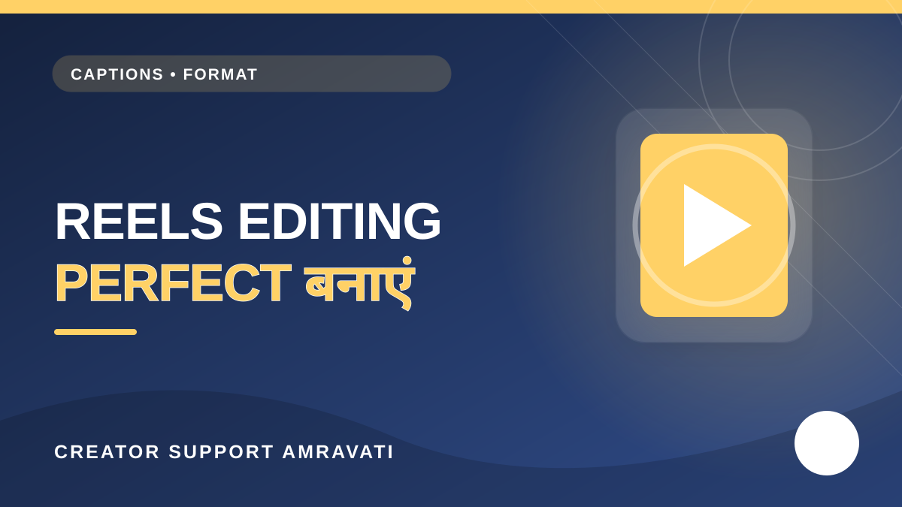

A strong Instagram Reel is easy to understand on a small screen, even when the viewer has the sound turned off. Good editing combines a clear idea, intentional framing, readable captions, natural pacing and an accurate call to action. This guide is for creators, local businesses, educators and personal brands planning short vertical videos for Instagram and other short-form platforms.
1. Start with one message
Before editing, decide what the viewer should remember. A Reel can introduce a product, answer one frequently asked question, show a process, share a customer experience or invite viewers to an event. Trying to communicate every feature, offer and contact detail in one short video usually makes the message difficult to follow.
Write the main point in one sentence. Then select only the shots and words that support it. For a service business, a simple structure may be: viewer problem, service or solution, one proof point and a clear next step. Do not make claims that the business cannot substantiate.
2. Frame for vertical viewing
Vertical 9:16 is a common full-screen format for Reels. If recording specifically for vertical video, keep the subject comfortably inside the frame and leave some space above the head and around products or demonstrations. If the source is landscape, check the crop throughout the entire shot; a centre crop may cut off a person who moves or a product placed near the edge.
Keep important text and faces away from areas where platform controls, captions or account information may appear. Platform interfaces can change, so review the finished video in the current app preview before publishing. A safe frame is not simply an empty border: it is a composition that keeps the important information visible.
| Element | Framing tip | Check |
|---|---|---|
| Face or speaker | Keep eyes and expression visible | Head is not cropped by vertical reframing |
| Product | Show the feature being discussed | Label and key details remain readable |
| Captions | Use a consistent text area | Do not cover face or interface controls |
| Call to action | Keep it short and specific | Viewer can read it before the clip ends |
3. Build a clear opening and natural pace
The first seconds should quickly tell the viewer what the clip is about. A hook can be a direct question, a useful result, a visual demonstration or a concise statement. It should accurately represent the rest of the video. Avoid sensational opening text that the footage does not support.
Remove accidental dead air and repeated takes, but do not cut every pause. Natural breathing space helps viewers process instructions and makes a speaker feel human. Use a close-up, B-roll or on-screen label when it adds information. Transitions and effects should support the message rather than become the main attraction.
A simple short-video structure
- Opening: State the question, problem or benefit.
- Context: Give the minimum information needed to understand it.
- Main value: Show the product, explain the tip or demonstrate the process.
- Next step: Tell viewers what to do next, if appropriate.
4. Design captions people can actually read
Captions help people follow spoken content without sound and can improve accessibility. Use a legible font, sufficient contrast and short phrases that follow the speaker's meaning. Keep the text on screen long enough to read. Avoid placing multiple lines over a face, product label or important demonstration.
Automatic captions are not final captions. Review the complete video and correct names, numbers, prices, addresses and Marathi or Hindi words. If a speaker uses a technical term, compare the caption with the script or project notes. A single incorrect price or phone number can make a business Reel misleading.
5. Use music and sound responsibly
Dialogue should remain clear above music. Check for sudden volume changes, clipping and distracting background noise. Use music only when the licence or platform terms permit the intended use. Audio availability may differ by account type, region and commercial purpose. A sound that is available for a personal post is not automatically cleared for a paid advertisement or a client's business page.
Sound effects should have a purpose. A subtle accent can help a transition, but repeated whooshes, impacts and loud music can make a simple explanation tiring. If the video is a customer testimonial or educational message, prioritise the speaker's words.
6. Export and review on a phone
Confirm the destination platform's current format requirements before export. Check the frame shape, resolution and frame rate against the source footage and project settings. Avoid unnecessary upscaling, which does not restore detail that was never captured. Use an export format that the publishing workflow can handle and preserve a high-quality master when appropriate.
Watch the exported file on a phone at normal screen size. Check the opening, captions, face framing, audio, product details, final CTA and any black frames. Then preview it in the publishing app to catch interface overlap or unexpected cropping.
Common Reels editing mistakes
- Using a landscape crop that cuts off the subject during movement.
- Writing long captions that disappear before viewers can read them.
- Adding unrelated trending audio or hashtags that do not match the message.
- Using copyrighted music in commercial content without checking permissions.
- Showing a price, offer or contact detail that is outdated or incorrect.
- Using effects that distract from the actual product or information.
Frequently asked questions
What aspect ratio is commonly used for Instagram Reels?
Vertical 9:16 is commonly used for full-screen Reels. Check current platform specifications and preview the finished post before publishing.
Should every Reel have captions?
Captions are useful for spoken videos, especially for viewers watching without sound. They are not a substitute for clear visuals, and every caption should be proofread.
Can a landscape video be converted into a Reel?
Often yes, but the editor must reframe the important subject. Some shots may need a custom crop, split layout or additional vertical footage rather than an automatic centre crop.
How many ideas should one Reel contain?
Usually one main idea is easier to understand. If the subject needs several steps, consider a short series rather than squeezing every detail into one clip.
Need Reels edited for your brand?
CSA accepts enquiries for short-form edits for creators, professionals and businesses. Share your raw footage, language, target platform, number of clips and preferred style so the scope can be reviewed.